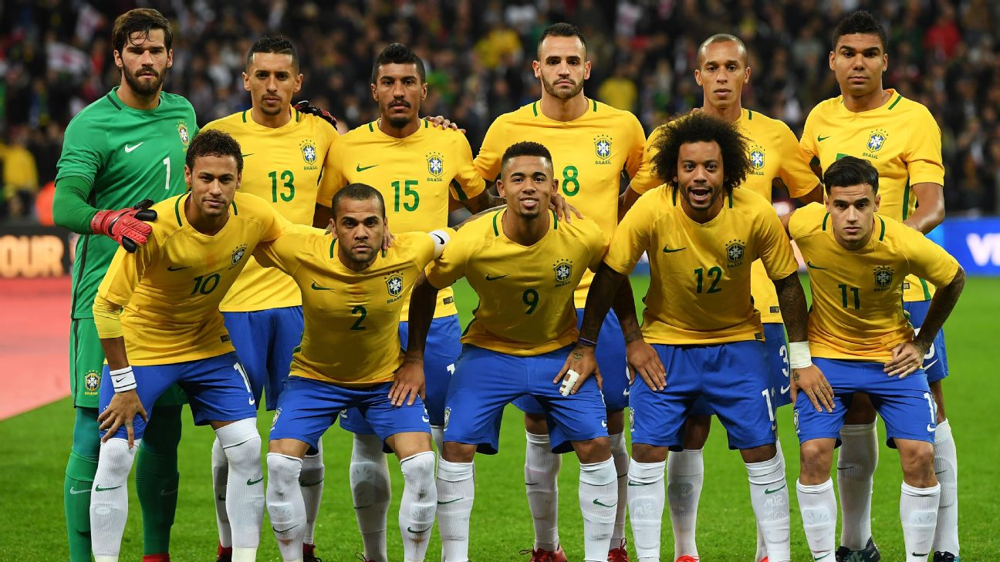

BANDERA |
NOMBRE |
PUNTOS |
 |
BRASIL |
1772 |
Brasil es ampliamente reconocido como el país con el mejor fútbol del mundo, un estatus que ha consolidado a lo largo de décadas gracias a su rica historia de éxitos internacionales, su estilo de juego vistoso y una cantera inagotable de talento futbolístico. La selección de Brasil es la más exitosa en la historia de la Copa del Mundo, habiendo ganado el torneo en cinco ocasiones (1958, 1962, 1970, 1994 y 2002), lo que la convierte en un referente absoluto del fútbol internacional. Además de sus títulos mundiales, Brasil ha sido un protagonista constante en competiciones como la Copa América, donde ha alzado el trofeo en numerosas ediciones, y el fútbol olímpico, ganando medallas de oro en los Juegos Olímpicos de 2016 y 2021. El fútbol brasileño es famoso por su estilo único, el "jogo bonito", caracterizado por una mezcla de habilidad técnica, creatividad y una capacidad innata para el espectáculo. Los jugadores brasileños son conocidos por su destreza con el balón, su capacidad para realizar regates y su facilidad para improvisar en situaciones de juego, lo que ha encantado a aficionados de todo el mundo. Brasil ha sido cuna de algunos de los futbolistas más legendarios de la historia, como Pelé, quien es considerado por muchos el mejor jugador de todos los tiempos. Pelé, con sus tres títulos mundiales y sus más de 1,000 goles, es un símbolo de la grandeza del fútbol brasileño. Siguiendo sus pasos, jugadores como Zico, Romário, Ronaldo, Rivaldo, Ronaldinho y más recientemente Neymar han continuado con el legado de Brasil, dejando una huella imborrable en la historia del fútbol. El éxito de Brasil no se limita solo a la selección nacional. El fútbol de clubes en Brasil también ha tenido un impacto significativo a nivel continental e internacional. Equipos como el Santos, Flamengo, São Paulo, Palmeiras y Corinthians han dominado competiciones como la Copa Libertadores, la máxima competición de clubes en América del Sur, y han ganado reconocimiento mundial al enfrentarse a los mejores equipos de Europa en torneos como el Mundial de Clubes de la FIFA. Estos clubes, además de sus éxitos deportivos, han sido fundamentales en la formación de jóvenes talentos que luego se consolidan en las grandes ligas del mundo, especialmente en Europa, donde los futbolistas brasileños son altamente valorados por su habilidad y competitividad. z
